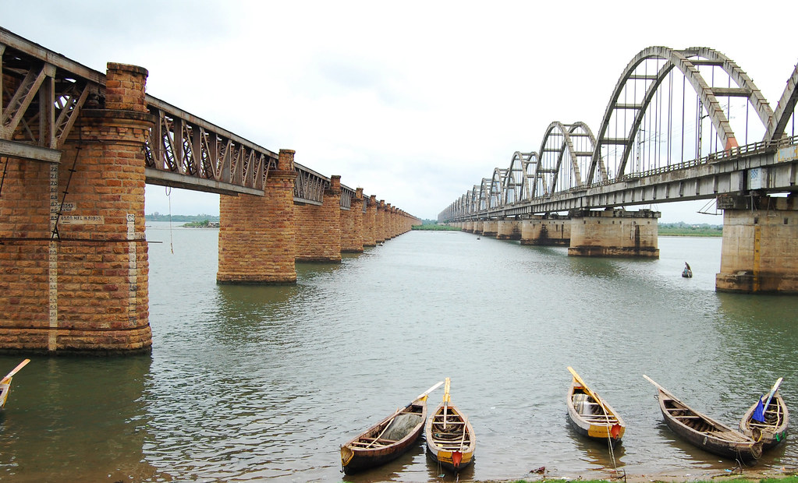
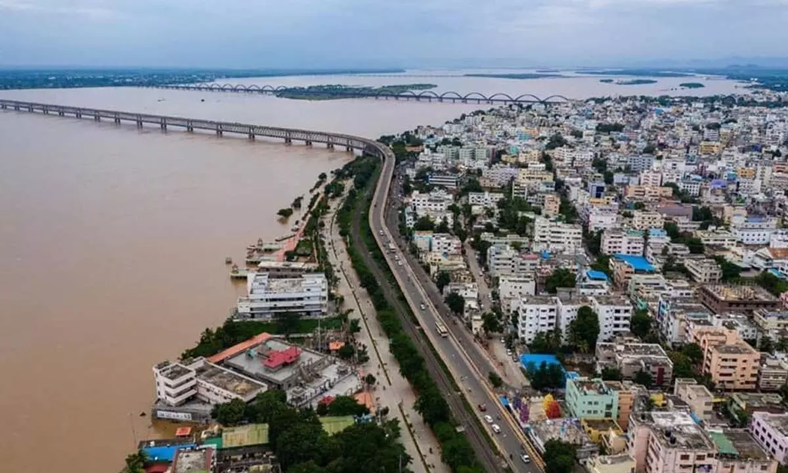

East Godavari is a district in the Coastal Andhra region of Andhra Pradesh, India. Its district headquarters is at Rajamahendravaram. In the Madras Presidency, the District of Rajamahendravaram was created in 1823. It was reorganised in 1859 and was bifurcated into Godavari and Krishna districts. During British rule, Rajamahendravaram was the headquarters of Godavari District, which was further bifurcated into East Godavari and West Godavari districts in 1925. When the Godavari district was divided, Kakinada became the headquarters of East Godavari and Eluru became headquarters of West Godavari. In November 1956, Andhra Pradesh was formed by merging Andhra State with the Telugu-speaking areas of the Hyderabad State. In 1959, the Bhadrachalam revenue division, consisting of Bhadrachalam and Naguru Taluqs (2 Taluqas in 1959 but later subdivided into Wajedu, Venkatapruram, Charla, Dummugudem, Bhadrachalam, Nellipaka, Chinturu, Kunavaram, and Vara Rama Chandra Puram Mandals) of the East Godavari district were merged into the Khammam district. After June 2014's reorganisation and division of Andhra Pradesh, the mandals of Bhadrachalam (with the exception of Bhadrachalam Temple), Nellipaka, Chinturu, Kunavaram and Vara Rama Chandra Puram were re-added back to the East Godavari district.
| District headquarters | Rajahmundry |
|---|---|
| Revenue divisions | Kovvur revenue division, Rajahmundry revenue division |
| Cities | Rajahmundry |
| Mandals | Ambajipuram,Anaparthi,Biccavolu,Chagallu, Devarapalle,Gokavaram mandal,Gopalapuram, Kadiam,Korukonda,Kovvu,rNallajerla,Nidadavole, Peravali,Rajahmundry Rural,Rajahmundry Urban, Rajanagaram,Rangampeta,Seethanagaram,Undrajavaram |